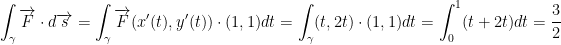
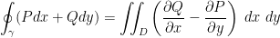

Created Tuesday 30 June 2020
Well. Quiz 2 is almost here.
:(
I believe integrals will only be on the final so I'm going to skip this lecture to focus on reviewing for the quiz and finishing HW 4.
—
Quiz is done. Felt okay. Let's learn to integrate and get this course over with.
Curves
We begin we a review about curves.
Def: A curve γ (gamma) in  is just a continuous map:
is just a continuous map:
So, we have an interval, I, from a to b on the number line. And we go from this to  .
.
is gamma by the way.
Def: If
Def: A curve γ is called a simple curve if two things happen. If γ is continuous and it is one-to-one.
So, the curve γ has no self-intersecting points.
So is called a reparameterization of the curve γ and  is called the parameterization of the curve.
is called the parameterization of the curve.
Another parameterization is .
Then our function will be
Or if then
No matter what, our unit circle always has a radius of 1.
Another Example
The above will be a curve.
So then, s is the interval [0, 2] and s2 is [0, 4].
So, despite being a bit different the following graphs:


Are the same!
Moving on...
Say we have the parabola .
Graphing this, we get the same parabola as we would .
All of these are examples of parameterization.
Orientation
Orientation of a closed simple curve.
So then, on a number line we have two directions: positive and negative.
Similarly, on a curve γ(t), we start at t=a and end at t=b. We can also have the inverse where we start at t=b and go to t=a.
What about a closed curve though? One that looks like this:

Def: In a closed curve the positive direction (or orientation) taken is the one such that when we move we have the interior of the closed curve on our left side. In other words, we move along the curve in a counter-clockwise motion.
If we move and have the interior of the closed curve on our right side, then we are moving in the negative direction. In other words, we are moving clockwise.
Counter-clockwise: Positive
Clockwise: Negative
Line Integrals
Let γ(t) be a curve in  and
and  .
.
Def: We define the line integral of f along the curve γ as:
In case you can't see, the lower bound is γ. Also, s is the length of the curve. Also, f(γ(t)) is a real number. We are also taking length of the derivative of γ in respect to t.
So then,
Example
Find where γ(t) = (cos(t), sin(t), t) and
Solution
If you're wondering how we got two, remember that sin2θ + cos2θ = 1. Remember, trig identities.
So...
I tried solving this by hand but sorta forgot how to integrate. I'll take his word that that's the answer for now.
Anyways, this was an example of how to calculate the line integral.
General Case of Line Integrals
Suppose  and
and 
F is a vector function. For any vector, we associate another vector.
Def: A function
is called a vector field.
Def: We define the line integral:
Remember, the dot is for the dot (inner) product.
Now then, we notice that if  , then we have is the target space is
, then we have is the target space is  .
.
So, since we can write that:
But! We know that . Same deal for y, z, etc.
So then, continuing from the long ass integral from before, we have this general form:
Properties
1) The Line integral is independent of the parameterization of γ(t). For example:
In case you're wondering, this parameterization he's referring to is the γ(t) as we see in the integral above. So, if we have a different parameter then we'd get the same result. No matter what, the integral will be the same.
Let's see an example of this:
Consider where  . Also, γ(t) is a segment from (0, 0) to (1, 1).
. Also, γ(t) is a segment from (0, 0) to (1, 1).
So this, let's say that our γ(t) = (t, t). That also means y'(t) = (1, 1).

I didn't crunch the numbers so I'll assume 3/2 is correct.
Now let's change the parameterization!
So, let
Now we have:

Just like before, we got 3/2. As such, changing parameterization doesn't change the result of the integral!
However, this is not true when you change orientation!
Changing Orientation
When changing the orientation of the curve we change the sign of the integral.
As in Calculus 2, we have:
Example of the previous case
Instead of γ going from (0, 0) to (1, 1), we shall now go in the reverse! That is, from (1, 1) to (0, 0).
Gamma is now
We also now have with the above change.
Green's Theorem
Connects in  the double integral with the path integral.
the double integral with the path integral.
Here we consider closed simple curves γ. In that case, instead of writing we write .
If then
We write 
So now when we take the dot (inner) product we do the following:
Green's Theorem
Says that:

where in our closed simple curve γ we have D which is the interior which is the domain. To reiterate, D is the domain include within the closed simple curve by γ. Remember, what makes it a closed simple curve is that it completes the circuit and doesn't intersect with itself.
Here is an illustration of what I mean:
Example
Calculate
where γ is the circle .
By Green's Theorem, we have
Let
Then we have:
Also, x = rcosθ and y = rsinθ. So then, x2 + y2 = r2.
In turn, we have .
Likewise,
I won't lie. I'm pretty confused. This is a lot to take in.
Oh, I think I know why. I did this before his double-triple integral video... I thought this one came first :\
{kind=link}
{kind=link}
{kind=link}
{kind=link}
{kind=link}
{kind=link}
{kind=link}
{kind=link}
{kind=link}
{kind=link}
{kind=link}
{kind=link}
{kind=link}
{kind=link}
{kind=link}
{kind=link}
{kind=link}
{kind=link}
{kind=link}
{kind=link}
{kind=link}
{kind=link}
{kind=link}
{kind=link}
{kind=link}
{kind=link}
{kind=link}
{kind=link}
{kind=link}
{kind=link}
{kind=link}
{kind=link}
{kind=link}
{kind=link}
{kind=link}
{kind=link}
{kind=link}
{kind=link}
{kind=link}
{kind=link}
{kind=link}
{kind=link}
{kind=link}
{kind=link}
{kind=link}
{kind=link}
{kind=link}
{kind=link}
{kind=link}